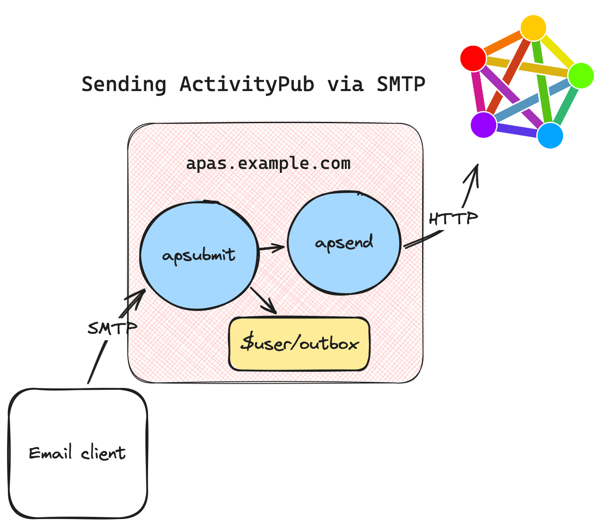
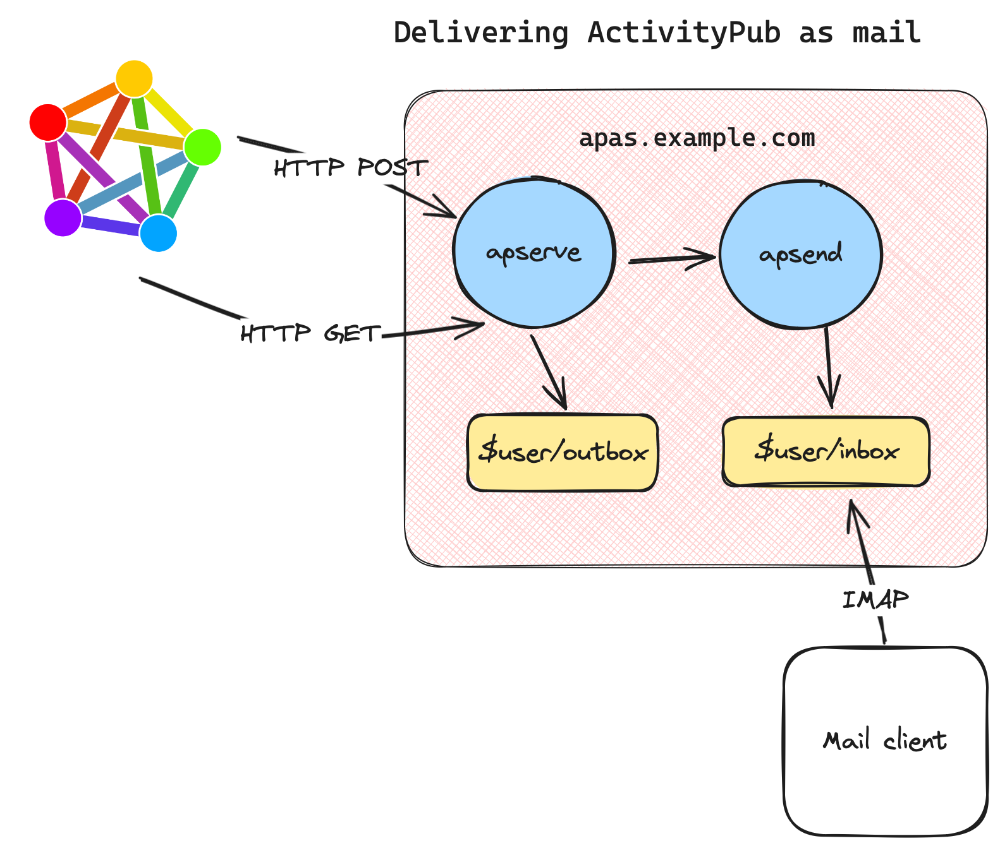

Apas: ActivityPub via email
By Oliver Lowe <o@olowe.co> (otl@apubtest2.srcbeat.com)
Every program attempts to expand until it can read mail. Those programs which cannot so expand are replaced by ones which can.
—Zawinski’s Law of Software Envelopment
The most popular systems on the ActivityPub-speaking [Fediverse] are imitations of non-federated platforms. Mastodon and Misskey are Twitter clones; Lemmy is a Reddit clone. But ActivityPub – the protocol connecting all these systems together – is often said to be similar to email, which involves exchanging messages. In the case of at least Mastodon and Lemmy, ActivityPub was implemented after the bulk of each sofware was designed. Message exchange – federation by ActivityPub – is arguably a second-class citizen for these traditional CRUD web applications backed by SQL databases and fronted by web browser UIs.
Apas is an experiment in exposing ActivityPub in a familiar and popular interface: email. Its primary goal is to clarify how ActivityPub and the Fediverse work for the broader community. A number of secondary goals are detailed later.
1. Motivation
As a fan of Plan 9 and a weirdo who likes to fiddle with network protocols for fun, I was disappointed with what using Mastodon, Lemmy et al. felt like.
What excites me is communication! Exchanging messages between people, systems, and places we can’t think of yet! It’s what makes receiving even just a single email from a random person such a viscerally distinct experience from thousands reading your post you uploaded somewhere. We’re communicating!
Implementing a subset of the Mastodon and Lemmy HTTP APIs in a couple of languages was relatively straightforward. After writing some small clients and tooling it felt like I was just dealing with platforms, not a federated universe. The pattern was familiar for many software developers:
- You create a post,
- that gets written to a database,
- you get an ID back, indicating success.
But the whole federation bit is obscured. You hope that others can see that post… somehow…? The platform thinking is evident in the language we see around these systems: “I saw this on Lemmy”, or “this is trending on Mastodon”, or “find me on Akkoma”. Nobody says “find me on email” or “someone sent this on email”.
Interoperability efforts fall flat when expertise in one system does not translate to another. Moderation and tooling discussions are artificially limited to a particular system. Should a plugin for Friendica filtering posts containing racist language only work with Friendica when all the systems work together? Should it even be a plugin tied to one particular system in a particular programming language at all?
Finally, interoperability and portability is the “killer feature” of ActivityPub systems and any significant software system. We know software developers can write standalone Twitter clones day-in, day-out. But no amount of funding to Instagram or any other incumbent commercial platform will ever make it available for shitty government systems, space stations, embedded devices, your grandmother, charities, snail mail, VR headsets, and automatic vacuum cleaners all at once.
Writing better software systems often means communicating better. That means understanding ActivityPub better.
2. Overview
Apas is mostly inspired by the upas email system available with Plan 9; a collection of small programs operate on files and streams, relaying messages out to the Internet or delivering to mailboxes on the filesystem. (But it’s so much more limited and poorly designed than upas that I was hesitant to even write this bit!)
An important difference from existing Fediverse software is that apas only represents Activities as messages. There are no application-specific data structures like posts, toots, comments, or pages. Messages can be files in a filesystem, which simplifies implementation significantly.
2.1 Messages
Apas marshals ActivityPub objects into RFC5322 messages and vice-versa.
The Note Activity is probably the most recognisable object exchanged by ActivityPub servers. They are represented as comments by Lemmy, and posts (toots?) by Mastodon. For instance, imagine a reply from Alex to Bowie talking about motorcycle tyres. It’s passed around the Fediverse as JSON-encoded data like this:
{
"type": "Note"
"id": "https://apub.example.com/alex/12345678",
"attributedTo": "https://apub.example.com/alex"
"to": "https://apas.test.example/bowie/87654321",
"cc": "https://apas.test.example/bowie/followers",
"inReplyTo": "https://apas.test.example/bowie/87654321",
"name": "Thoughts on 50/50 tyres"
"content": "But what if you don't know when you want to ride off-road?",
}
For apas this is equivalent to the mail message:
From: "Alex " <alex@apub.example.com>
To: "Bowie" <bowie@apas.test.example>
CC: "Bowie (followers)" <bowie+followers@apas.test.example>
Message-ID: <https://apub.example.com/alex/12345678>
In-Reply-To: <https://apas.test.example/bowie/87654321>
Subject: Thoughts on 50/50 tyres
But what if you don't know when you want to ride off-road?
Unlike other Fediverse software, the message to be distributed is written and read by people; not just machines. For developers, administrators, and advanced users, seeing data like this builds familiarity with the behaviour between systems, and facilitates communication. We go from “why can I see my toot on Kbin but not on Pleroma?” to “why didn’t your Pleroma server receive my message?” which is a much easier question to answer; it’s what the systems are actually doing.
If there was only one thing to take away from apas, it’s that familiarity with data over an API is hugely helpful for troubleshooting. Especially when typical bug reports consist of URLs to irrelevant web apps (or even just screenshots!) trying to explain what was sent versus what was received. That’s before we we even address what could be in a database, itself requiring its own query language and tightly-controlled administrative access to read.
2.2. Sending
Presenting posts, comments, notes, etc. as a mail message immediately clarifies a big source of confusion with existing systems: why isn’t my post showing up? It becomes easier to reason about this when it is obvious where is a message is sent. An email lists recipients explicitly. When replying to a Kbin comment via Mastodon, it takes knowledge of how each system is implemented to know who the recipients are, if any.
Regular email clients
(or even any old text editor!)
provide an interactive way to test other AP systems.
For instance, we can easily test how the message is received if we address the recipient in the CC field instead of To,
or if we list the same recipient 20 times in both fields.
Apas could report deliverability errors either:
- immediately, or
- as a bounced message
At the moment, error messages are returned immediately. This has provided a pleasant enough testing experience that makes learning ActivityPub an interactive process, directly from any mail client, especially compared with the usual drudgery of sifting through logs of big web applications.
Sending is involves two programs each playing its own role:
- Asubmission program accepts messages from authorised users, and
- A mailer handles sending messages to the Internet.

2.2.1. Submission
Messages are submitted to a server running apsubmit.
apsubmit is a SMTP server.
It listens for SMTP connections,
authenticates the session,
then passes the received message to the mailer apsend.
SMTP is a widely implemented protocol.
apsubmit enables
existing mail clients,
embededed devices,
and systems that I don’t even know exist,
to publish to the Fediverse.
For personal use, it has been fine using mutt via SSH on a Linux server, Sylpheed on my OpenBSD laptop, MailMate on a shared iMac, and the built-in Mail app on my iPhone for replies. I’ll leave others to come up with more ideas; keep in mind weather stations, printers, video records can usually send email but definitely cannot speak ActivityPub!
For fast feedback,
apsubmit takes advantage of the RCPT stage of the SMTP transaction.
It verifies that listed recipients exist and have inboxes we can target.
This is in contrast with e.g. Mastodon,
which will always accept creating the following post:
@john@nowhere.invalid @deleteduser@example.org what do you think?
There’s several possible error conditions here. For john, perhaps:
- their server is down and messages are undeliverable,
- their Actor is misconfigured and is missing an
inboxendpoint, - the address is totally invalid
For deleteduser, perhaps the account no longer exists.
Mastodon never notifies of any delivery errors.
We could ask the server administrators to trawl through the server’s logs for us,
or ask johnny and deleteduser out-of-band if they got our message.
Accounting for some common errors at submission time obviates that extra work.
2.2.2 Mailer
Sending messages is performed by a command-line utility called apsend.
apsend reads a message from standard input and disposes of it based on the recipients.
If the above message from Alex to Bowie was in a file called “note.eml”,
we could send it with the following shell command:
apsend -t < file.eml
In general, apsend is not intended to be executed directly.
Instead, a frontend like an email client (sending via SMTP)
or a tool like Plan 9’s marshal(1)
should be used which take care of adding entries to and formatting the
header correctly.
2.3 Receiving
Core to apas is handling ActivityPub objects as files in a filesystem. This reveals there are many different ways to retrieve Activitity from the Fediverse beyond the typical process of servers sending Activity to an Actor’s inbox. Apas of course supports this (see 2.3.2), but it’s worth mentioning other techniques to show how flexible working with the Fediverse can be. It may also help clarify discussions on user privacy.
2.3.1 Direct
This was the first implementation of receiving ActivityPub objects for apas.
The command apget fetches the Activity at a URL, then writes it to the standard output.
Throughout testing, I ran the tool in shell scripts like the below to deliver messages to my inbox:
apget https://apub.example.com/alex/12345678 | apsend otl
Little shell scripts can fetch a series of posts:
for i in `seq 12345671 12345678`
do
apget -m https://apub.example.com/alex/$i
done
Obviously this is inefficient compared to other methods, but we’re not Google. Handy ad-hoc testing.
2.3.2 Targeting the ActivityPub inbox
This is the typical ActivityPub process. For example, someone could mention us in a Mastodon post:
@bowie@apas.test.example hope apas is going OK!
Which results in the Mastodon server sending Activity to bowie’s Actor inbox.
In apas,
apserve provides a typical HTTP server for a minimal ActivityPub service.
It is responsible for:
- receiving Activity over HTTP (ActivityPub inbox)
- serving users’ sent Activity for other servers to fetch (ActivityPub outbox)
- serving each user’s Actor
- resolving WebFinger lookups

Delivery is not handled by apserve.
Instead, apserve converts Activities to mail messages,
and passes them on to apsend for delivery.
2.3.2 Following
Follows can be sent using apsend.
Because Follows are not represented clearly as mail,
the Follow needs to be written as JSON directly.
For example, for user bowie to follow alex:
{
"@context": "https://www.w3.org/ns/activitystreams"
"actor": "https://apas.example.org/bowie",
"type": "Follow",
"object": "https://apub.example.com/alex"
}
then piped to apsend:
apsend -j alex@apub.example.com < follow.json
Wrapped up in X-line shell script named apfollow,
following and unfollowing is equivalent to running the commands:
apfollow alex@apub.example.com
apfollow -u alex@apub.example.com
2.3.3 RSS/Atom feeds
Many ActivityPub servers also make content available via web feeds. This could be an efficient way to fetch content using a battle-tested format from resource-constrained servers.
One possible tool is something that manages reading new entries in a feed.
For each entry, it extracts the ActivityPub object ID from the
<guid> or <link> tag for RSS and Atom respectively.
<entry>
<title>Atom-Powered Robots Run Amok</title>
<link href="https://apub.example.com/alex/12345678"/>
<id>urn:uuid:1225c695-cfb8-4ebb-aaaa-80da344efa6a</id>
<updated>2023-12-13T18:30:02Z</updated>
<summary>hello, world!</summary>
</entry>
2.3.4 Fediverse software HTTP APIs
Many existing systems provide a HTTP API which provides a convenient way of finding content based on some application-specific logic e.g. a group, full-text search, or time created.
An early apas prototype was really just a Python script which synchronised my GoToSocial timeline with a directory on disk. In short:
for status in timeline():
note = apget(status.source_id)
with open(status.id) as f:
apub2email(f, note)
2.3.5 Takeaway
As mentioned already, core to apas is handling ActivityPub objects as text streams and files in a filesystem. It’s not meant to be the most performant system (not to say that it’s slow), but it lets us develop an understanding of the ActivityPub protocol and focus on the data over APIs via quick prototyping.
2.x TODO Filtering, spam?
- text streams
- small portable programs instead of plugins to growing systems
2.4 Reading
Messages are stored in the Maildir format; one message per file.
This is not an important part of the system.
Maildir is used only because of the easy implementation for apsend;
it just neads to create create files.
How messages are presented to users – no matter how they are stored – is a job for which software has been written for decades already.
Here are some that are being used or
2.4.1 read()
No, really.
During development, being able to just run cat(1) on a file to debug Content-Type encoding bug was a breath of fresh air when compared to what is more common in web development.
That is, running a unit test which queries a relational database running in a container in a virtual machine hopefully all configured correctly, then marshalling that into the application’s unique data structure, to ActivityPub, then finally JSON-encoded (half-joking).
2.4.2 Existing solutions
Maildir. Some clients can interact with Maildir directly, like mutt.
IMAP. The obvious and most popular method for accessing mailboxes over the network. Dovecot works well. IMAP is very widely supported by mail clients.
NNTP/Usenet.
Throughout this document I’ve referred to “mail messages”.
But the so-called “Internet Message Format” described in RFC 5322 is also used by
Usenet via a protocol known as NNTP.
The protocol is a simple line-based text protocol
with many open-source libraries available.
Serving Fediverse messages from a filesystem over NNTP would be a fun project.
Similar to how the Linux Kernel Mailing list is available over NNTP at nntp.lore.kernel.org.
Mailing list archive web interfaces. Finally yet another opportunity to give those old Perl scripts another lease of life.
upasfs(4).
upas is the system I studied to implement apas.
Messages could be relayed from apsend to upas/send,
or the Maildir could be converted to mdir(6).
Then we would have a real filesystem interface over 9P.
Another project for another time.
3. Workarounds & limitations
The mapping between Activity objects, mail messages, ActivityPub HTTP methods, and SMTP transactions has a number of limitations. Apas uses some workarounds internally to fill some gaps.
The Mention Activity,
used by Mastodon for notifications,
is implemented by reading the To field of submitted messages.
Recipients in To are added as Mentions.
For example, the message:
To: "Oliver Lowe" <otl@hachyderm.io>
Hello!
results in an entry in tags in an ActivityPub Note:
{
"type": "Note"
...
"tags": {[
"type": "Mention",
"href": "https://hachyderm.io/users/otl",
"name": "@otl@hachyderm.io"
]}
}
There is not an easy way to address an Actor’s followers using the acct: mail address syntax.
apas understands a non-standard syntax using “plus addressing”.
For example to address the followers of user@example.com
the address user+followers@example.com may be used.
These followers addresses cannot be resolved by WebFinger.
Likes and Dislikes are silently dropped by apserve.
The reader can decide whether this is a workaround, feature, or bug.
Accept and Rejects from Follow requests can be received via ActivityPub and delivered as mail but for notifications only. The reverse does not work; apas cannot read a Follow request from a mail message.
To simplifly delivery to local mailboxes,
Actors served by apserve have no shared inbox/outbox.
Fortunately shared inbox endpoints are inteded as a performance opimitisation for
servers hosting many Actors, which is beyond the scope of apas.